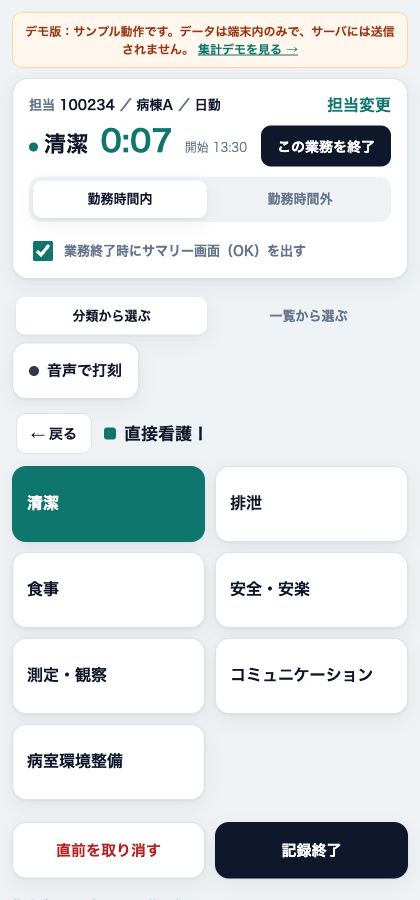
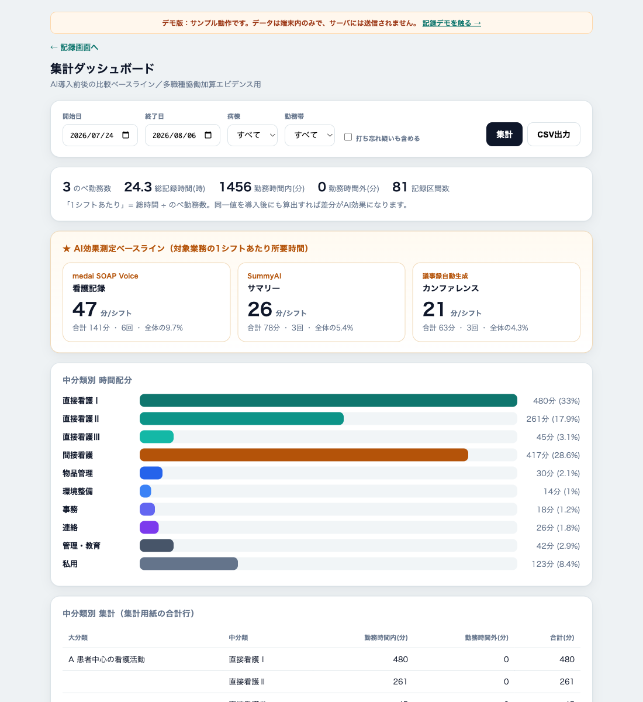

看護業務にかかる時間を 「ボタン1タップ」（または音声）で記録し、 AI（音声記録・退院時サマリー・議事録）導入の前後で効果を測る基準値を集めるための、 オンプレ完結・PHIを扱わないツールです。
看護師は「今やっている業務」のボタンを押すだけ。次のタップまでの時間が、その業務の 所要時間として自動で記録されます。「開始／終了」の2度押しは不要。集めたデータは、 AI導入前後の比較ベースラインと多職種協働加算のエビデンスの両方に使えます。
業務区分は、施設の業務量調査集計用紙に合わせた
大分類4（A 患者中心の看護活動 ／ B 看護単位中心の活動 ／ C 職員中心の活動 ／ D その他）
・中分類10・小分類43。集計結果も同じ並びで出るので、そのまま集計用紙の合計行に転記できます。
区分は main.py の CATEGORIES 1か所で定義しており、施設ごとに差し替えられます。


業務が切り替わるたびにボタンを1回押すだけ。所要時間は自動算出。担当者は従業員番号を1回入れるだけ。
「清潔」と言えば即記録し、ピピッ＋「清潔、記録します」と音声で返す。「終わりました」で終了。
WiFiが切れても端末内に一時保存し、復帰時に自動再送。記録が消えない。
看護記録・サマリー・カンファレンスを対象区分として分離し「分／シフト」で表示。
大分類A〜D・中分類10・小分類43。集計表も同じ並びで出るので転記がいらない。
ワンタップで切り替え。時間外に寄っている業務がそのまま数字で出る。
記録するのは業務区分と時刻だけ。担当者は従業員番号のみ。患者情報は一切入力しない設計。
FastAPI + PostgreSQL（小規模ならSQLite）。院内サーバ1台で完結。音声も院内STTで閉じられる。
Excel集計シートからの一括投入APIに対応。Web打刻とExcel分を同じ集計に載せられる。
ブラウザで開くだけ、ホーム画面追加でアプリ風。systemdで常駐。HTTPSでマイクも使える。
導入前に2〜4週間記録し、対象業務の「分／シフト」を確定（＝ベースライン）。
導入後、同じ期間・病棟・勤務帯で再度記録。
2つの「分／シフト」の差分＝削減時間。のべ勤務数と人件費を掛ければ金額換算まで一直線。 同じ1回の調査で「効果測定」と「加算エビデンス」の両方を賄えます。
記録画面の「🎤 音声で打刻」。業務名を言うとその場で記録開始し、ピピッ＋「○○、記録します」と 音声で返します。「終わりました」でピー＋「○○、終わりました」。確認のやり取りは挟まない即時モードで、 間違いは「取り消して」またはボタンで戻します。まず端末内の読み・別名のあいまい一致で判定し、 迷ったときだけ意図解釈AIに投げます（STT・AIとも未設定なら端末内判定だけで動作＝外部送信なし）。
Web Speech API ＋ OpenAI互換LLMで意図解釈。マイクは HTTPS 必須。
端末で録音 → 院内の faster-whisper 等へPOST、解釈もローカルLLM。外部通信なしで完結。
※ 上のデモでも音声ボタンは動きます（Chrome / HTTPS）。デモではAI解釈を使わず、端末内の一致のみです。
導入手順・設定は README.md、 モバイル端末からの接続は DEPLOY-mobile-vps.md を参照。